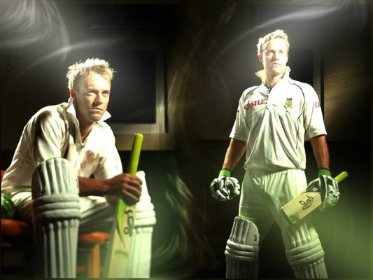

ABRAHAM BENJAMIN dE VILLIERS
World's Best Batsman

Abraham Benjamin "AB" de Villiers is a South African cricketer who captains the South African Test and One Day International (ODI) teams, and is regarded as the best batsman in the world at present and one of the best of all time.He holds many batting records, such as the fastest 50, 100 and 150 in ODI cricket, the fastest Test century by a South African and the fastest T20I 50 by a South African.As of 2016, he has passed 8,000 runs in both Test and ODI cricket and has a batting average of over fifty in both forms of the game.He is popular all over the world for his Unorthodox Cricket shots
When on song, de Villiers can take any bowling apart with his wide array of strokes on either side of the wicket. If his drives, pulls and cuts are pleasing to the eye, his ability to innovate has left bowlers hapless on many occasions.
Most of the ODI innings played by the master batsman, would be full of believe-it-or-not innovative shots, be it the ramp over the wicket-keeper, the cheeky paddles past short fine or the audacious reverse sweeps and reverse pulls while facing up to quick bowlers. Unquestionably, with his ability to manoeuvre the field placements and his excellent hand-eye co-ordination, de Villiers has turned out to be one of the most exciting batsmen across all formats of the game.
Early Life-Personal Info
Born: 17 February 1984 (age 32) Warmbad, Transvaal Province, South Africa
Nicknames: Mr. 360°,Superman
Batting style: Right-handed
Role: Batsman, Wicket-keeper, South Africa ODI Captain and Test captain
De Villiers is married to Danielle Swart with whom he had a son, named Abraham after himself in July 2015
Career
As a child, De Villiers played cricket at his home,He was particularly successful in golf, tennis and rugby union, but settled on a career in cricket by the age of 18De Villiers is a right-handed batsman, who has accumulated many runs in Tests including 21 centuries and 36 fifties. He holds the record for most Test innings without registering a duck (78)
He has 21 TEST centuries and 24 ODI centuries
An attacking batsman, de Villiers showed that he had it in him to play according to the merits of the situation as well. With South Africa struggling to save the Adelaide Test against Australia during the tour Down Under in 2012-13, de Villiers curbed his natural instincts, as he blocked his way to 33 from 220 balls. In the next Test at the WACA, he showed his other side, smacking 169 from just 184 balls as the visitors ruthlessly dismantled the hosts.
Records
- Fastest half-century in One day Internationals in 16 balls against West Indies at Wanderers Stadium, Johannesburg on 18 January 2015
- Fastest century in One day Internationals in 31 balls against West Indies at Wanderers Stadium, Johannesburg on 18 January 2015
- Fastest hundred and fifty in One day Internationals in 64 balls against West Indies at Sydney Cricket Ground, Australia on 27 February 2015
- Fastest player to reach 8000 runs in One Day Internationals
- He holds the record for the most sixes in Cricket World Cup (37 sixes) along with Chris Gayle
- He scored 34 runs in an over which is the third highest in ODIs
Awards
- He is the three time ICC ODI player of the year having won the award in 2010, 2014 & 2015
In all 3 formats,He has 10 MAN OF THE SERIES and 36 MAN OF THE MATCH AWARDS
QUOTES ON AB
"AB dE VILLIERS is the Definition of a cricketing Genius"-Michael Vaughan
"AB dE Villiers is changing the Rules of the Game"-Rahul Dravid
"AB dE Villiers is the Most Valuable Cricketer on the Planet"-Adam Gilchrist
Read more about Ab here:
WIKIPEDIA
CRICBUZZ
ESPNcricInfo